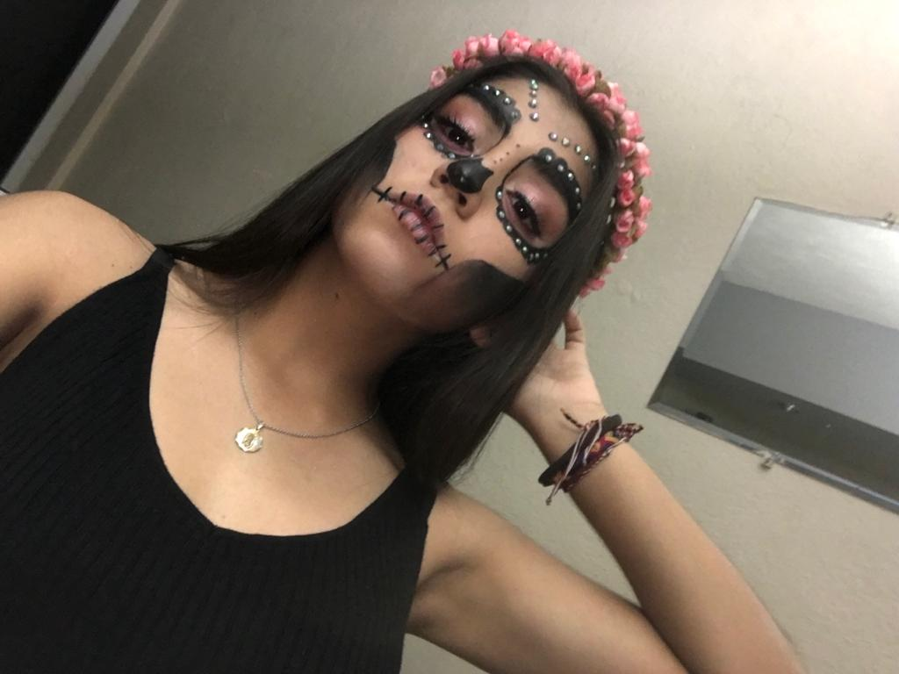

Café Literario Virtual
- A raíz de la pandemia, tuvimos que dejar de lado todo tipo de eventos que llevabamos a cabo en clases presenciales.
- Debido a esto, nuestro profesor sugirió este Café Literario Virtual el cual trataba de hacer una obra entre todos mis compañeros del salón.
- Después de largas semanas de trabajar en el guión, quedó listo para presentar.
- De esta manera, se acordó el día y fecha en el que lo estaríamos presentando mediante zoom. Los padres y amigos pudieron estar presentes en la sala y así mismo disfrutar de esta experiencia.